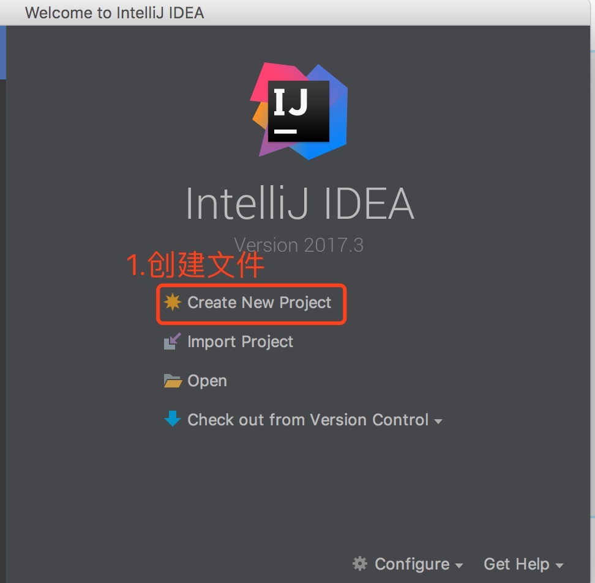
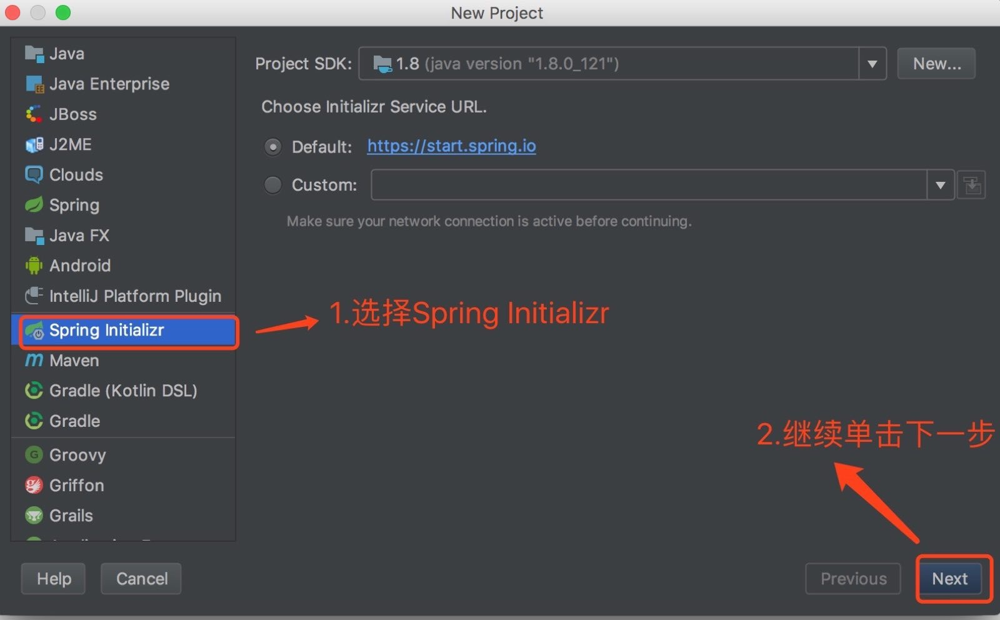
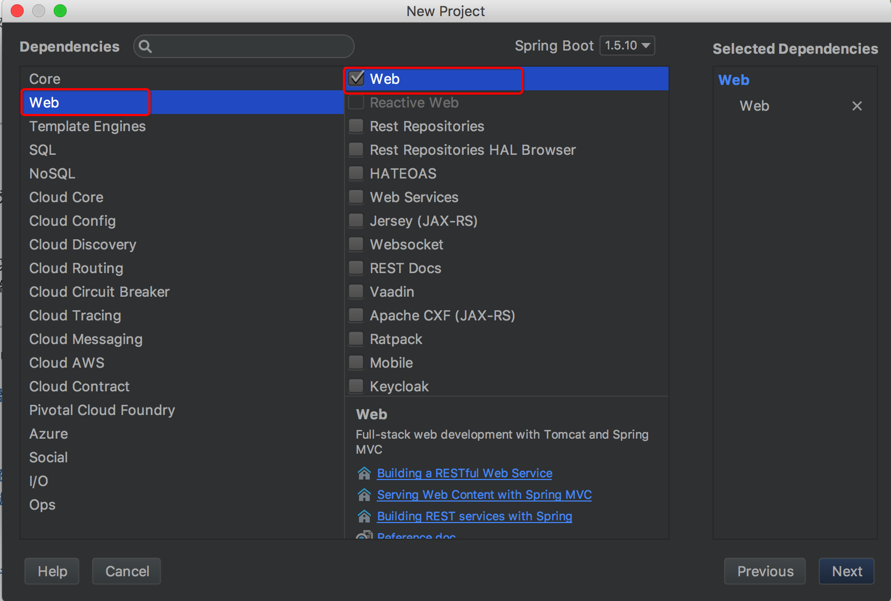
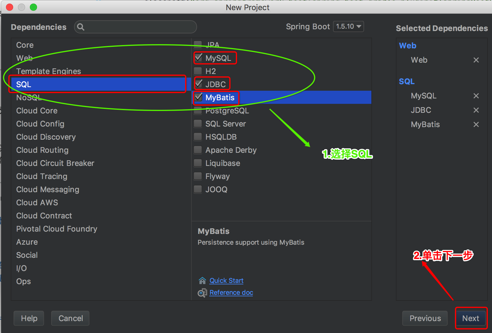
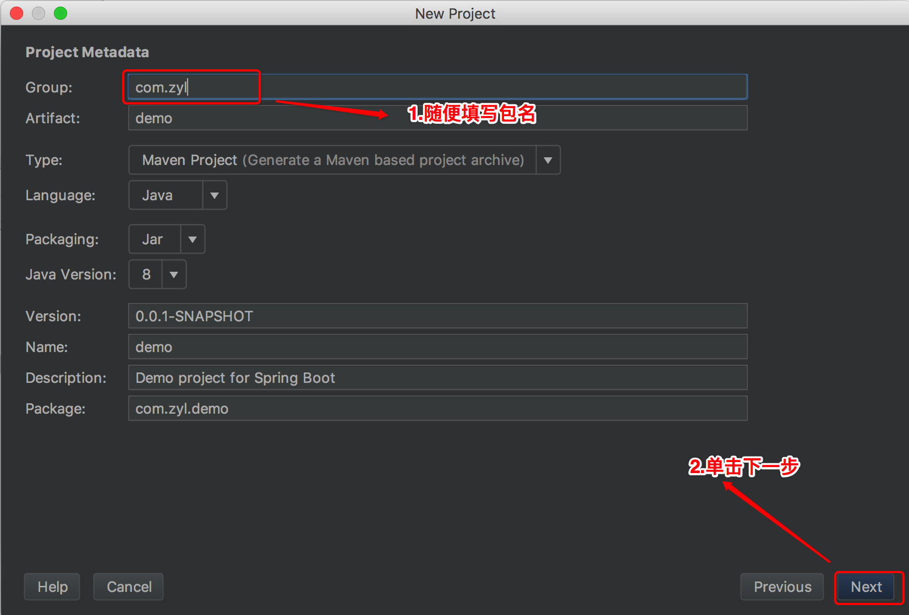
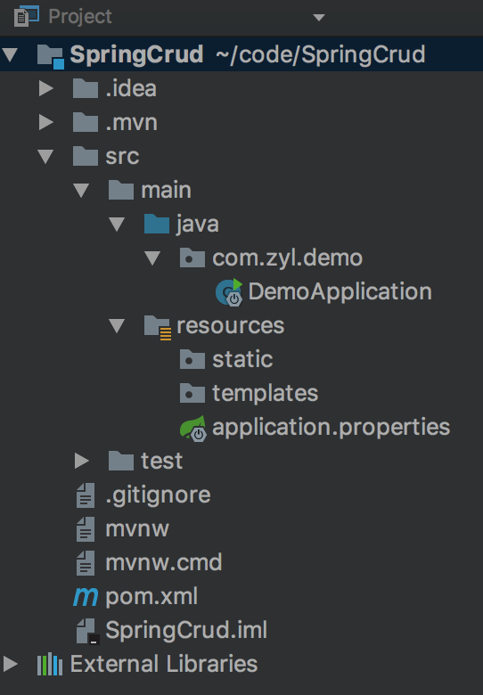

一个简单Spring Boot+MyBatis整合详解(1)
|如何使用IntelliJ IDEA创建Spring Boot项目
1.创建文件

2.选择Spring Initializr

3.选择Spring boot的maven配置依赖


4.随便填写包名

5.随便填写文件名
6.单击完成之后，就是默认工程文件

MAC终端器命令：
在命令行上创建一个新git的存储库
cd SpringCrud
echo "# SpringCrud" >> README.md
git init
git add README.md
git commit -m "first commit"
git remote add origin git@github.com:jinzita007/SpringCrud.git
git push -u origin master